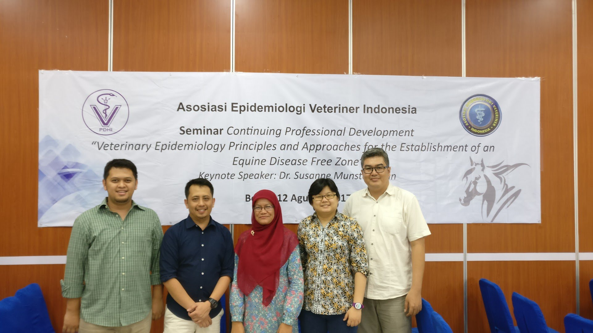
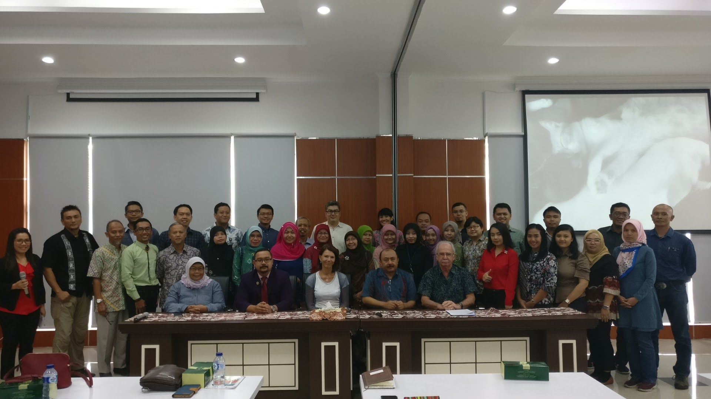
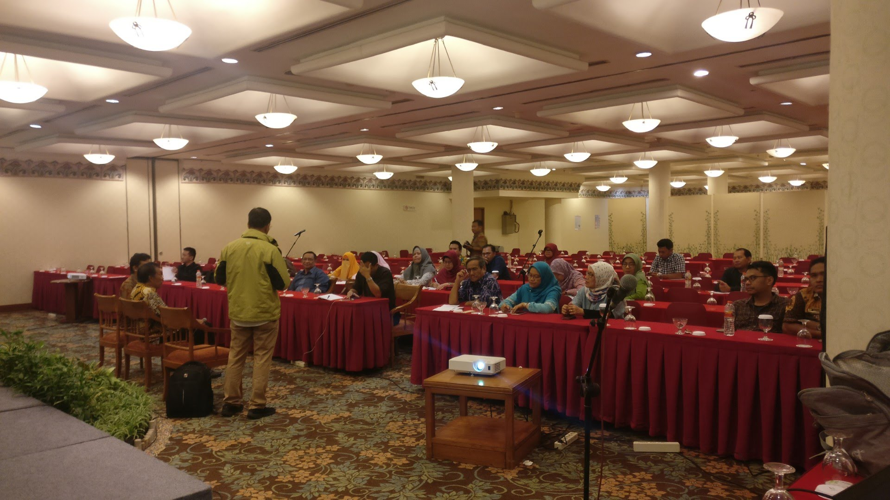
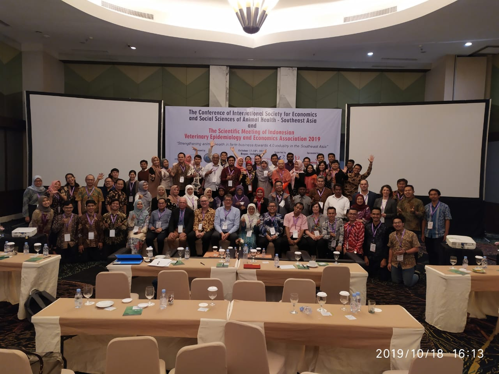
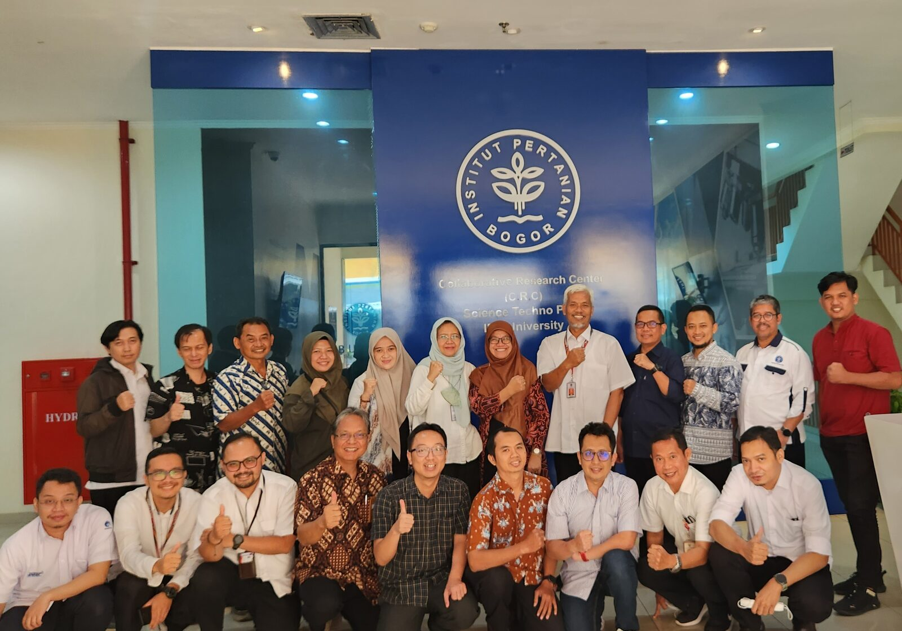

Konfirmasi kehadiran
Daftarkan kehadiran sebagai peserta MUNAS secara luring atau daring.
Peserta MUNAS↗ Asosiasi profesi berbasis keilmuan
AEEVI mempertemukan pengetahuan, pengalaman, dan kolaborasi para profesional untuk memperkuat kesehatan hewan dan kesehatan masyarakat.
MUNAS Agenda utama AEEVI
Partisipasi Anda membantu menentukan arah organisasi dan masa depan epidemiologi veteriner Indonesia.
MUNAS dilaksanakan pukul 09.00–12.00 WIB secara luring dan daring.
Daftarkan kehadiran sebagai peserta MUNAS secara luring atau daring.
Peserta MUNASSampaikan usulan perubahan ART atau nama bakal calon Ketua AEEVI 2026–2029.
Partisipasi anggota09.00–12.00 WIB · Luring dan daring.
Hari pelaksanaan05 Pemantauan kesehatan
Pembaruan dari sumber resmi dan event-based surveillance untuk membantu membaca sinyal kesehatan manusia, hewan, dan One Health.
Pembaruan kelembagaan, notifikasi, dan laporan teknis.
Kejadian kesehatan masyarakat lintas negara dan berpotensi menjadi perhatian internasional. Pelaporan melalui IHR dapat memiliki jeda.
Buka pembaruan WHO ↗ WHO · SEAROOutbreaks & EmergenciesPembaruan wabah dan kedaruratan kesehatan di kawasan Asia Tenggara, termasuk Indonesia.
Buka pembaruan SEARO ↗ WHO · WPROAvian Influenza Weekly UpdateIndonesia berada di SEARO, namun laporan mingguan WPRO sering memberi rincian regional yang relevan untuk influenza zoonotik.
Lihat update mingguan ↗ WOAH · HEWANWAHIS AlertsNotifikasi segera dan informasi penyakit hewan yang dilaporkan negara anggota; cakupan bergantung pada pelaporan resmi.
Buka sistem WAHIS ↗ FAO · HEWANEMPRES-iPemantauan penyakit hewan lintas batas, termasuk HPAI, ASF, LSD, dan PMK.
Buka peta dan data FAO ↗ ECDC · ANALISIS RISIKOCommunicable Disease Threats ReportLaporan mingguan dengan ringkasan ancaman dan analisis risiko kesehatan masyarakat.
Buka laporan terbaru ↗ CDC · AS & GLOBALHAN & MMWRAlert kesehatan publik dan laporan teknis; berguna untuk sinyal, bukti, dan metodologi.
Buka CDC HAN ↗ ASEAN · REGIONALBioDiaspora Virtual CenterAnalisis regional, termasuk pola mobilitas dan potensi risiko importasi penyakit; sebagian materi tersedia terbuka.
Buka portal ASEAN ↗Sumber untuk deteksi dini; laporan awal bukan konfirmasi wabah.
Kurasi laporan penyakit pada manusia, hewan, dan tumbuhan. Akses penuh kini memiliki batasan berlangganan; periksa ketentuan akses dan verifikasi laporan dengan sumber resmi.
Buka ProMED ↗ BOSTON UNIVERSITYBEACONInisiatif event-based surveillance yang terkait dengan Center on Emerging Infectious Diseases di Boston University. Status operasi, akses, dan cakupan datanya perlu diverifikasi langsung sebelum digunakan.
Buka BEACON / CEID ↗ AGREGASI OTOMATISHealthMapAgregasi berita berbasis peta dengan volume sinyal tinggi; berpotensi memuat noise dan memerlukan verifikasi independen.
Buka HealthMap ↗Daftar sumber ini membantu pemantauan; bukan pengganti notifikasi resmi pemerintah atau penilaian risiko oleh otoritas kesehatan.
01 Tentang AEEVI
AEEVI adalah asosiasi profesi yang berfokus pada pengembangan ilmu epidemiologi dan ekonomi veteriner di Indonesia. Website ini menjadi rumah informasi resmi organisasi—terbuka, terstruktur, dan mudah diperbarui.
Pelajari lebih lanjut ↗02 Fokus organisasi
Struktur konten yang diusulkan menempatkan kebutuhan anggota, mitra, dan publik sebagai titik awal.
Pengembangan epidemiologi, ekonomi, dan analisis kesehatan hewan.
Lihat pengetahuan ↗Ruang belajar, pelatihan, dan penguatan kapasitas anggota.
Lihat kegiatan ↗Jejaring profesi dengan pemerintah, akademisi, dan mitra pembangunan.
Terhubung dengan kami ↗Kontribusi berbasis bukti untuk kesehatan hewan dan masyarakat.
Tentang AEEVI ↗03 Kegiatan & agenda
Ruang bersama untuk menyelaraskan prioritas kegiatan, layanan anggota, dan pengembangan website resmi AEEVI.
Baca ringkasan ↗Informasi kegiatan dan materi untuk anggota.
Diskusi ilmiah bersama jejaring AEEVI.
Informasi registrasi dan layanan anggota.
04 Dokumentasi AEEVI
Foto dokumentasi dari arsip AEEVI yang memperlihatkan ruang belajar, pertemuan, dan kolaborasi organisasi.





04 Pengetahuan & publikasi
Ruang untuk artikel anggota, publikasi ilmiah, berita organisasi, dan dokumen resmi.
05 Keanggotaan
Informasi keanggotaan, pendaftaran, dan layanan anggota akan tersedia dalam satu ruang yang mudah diakses.